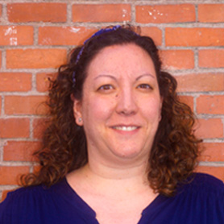

Keep calm and code on!
EQUIPO
Class-coders es un grupo de desarrolladoras front-end que quiere hacerse un hueco en el mundo digital.
Nace a partir de la creatividad, motivación y la necesidad de continuo aprendizaje de un grupo de mujeres que acaban de empezar.
Fortalezas
Class-coders se caractiza por estar formado por mujeres resilientes, ganas de superarse a sí mismas y seguir evolucionando como programadoras. Además, el variado perfil de las mujeres que forman este grupo, le dota de una importante diversidad de puntos de vista y formas de solucionar los retos.
Es un grupo muy creativo y su experiencia en otros campos de la vida les ha dotado de muchas armas que quieren aplicar al mundo front-end.
Debilidades
A pesar de ser desarrolladoras junior, tienen una gran motivación y curiosidad con todo lo relacionado con la tecnología lo que las hace seguir aprendiendo y desarrollándose. Su principal defecto es la perfección, aunque algunas veces es una virtud muy deseada.
QUIÉNES SOMOS
-

Ana María Romero
Ana es una granadina que vino a buscarse la vida a Madrid. Después de varios años dedicada al sector del Turismo, busca hacerse un hueco como profesional de las nuevas tecnologías. Con muchas ganas de poner en práctica todo lo aprendido en Adalab está deseando formar parte de la comunidad Front-End.
Iris Paredes
Iris es candeledana y se independizó a los 18 años en Madrid. Es Técnica Superior en Gestión Comercial y Marketing y tiene una amplia experiencia laboral en atención al cliente y comercio, especialmente en el sector de telefonía y también en diseño de cocinas. Tras sentirse atrapada en puestos “automatizables” se dió cuenta de que debía dar el salto al sector IT y convertirse en Desarrolladora Web. Le gusta el rock, hacer trekking por la naturaleza y le relajan las manualidades.
Libertad Chapinal
Tras salir de la universidad, Libertad comenzó a trabajar como bióloga. Aunque la experiencia fue corta, le sirvió para darse cuenta de que aún le quedaba mucho por aprender y vió que el mundo Front-End y Adalab le ofrecieron una oportunidad que no podía rechazar.
Megan Edwards
Megan viene de Nottingham en Inglaterra. Después de un año y media viviendo en Madrid y trabajando como profesora de inglés, está preparada para un nuevo reto! Siempre ha estado interesada en la programación y ahora es la hora para convertirse en parte del mundo digital. A Megan le gusta leer, tocar el piano y hornear sin gluten.
Sara Cabeza
Sara es una diseñadora gráfica - UX/UI, originaria de Málaga y muy indentificada con la cultura británica después de vivir durante años en Inglaterra. Siempre le ha interesado el mundo tecnológico y ahora se lanza a aprender código y programación. Obsesionada con los perros (aunque sea alérgica) y muy fan del karaoke.